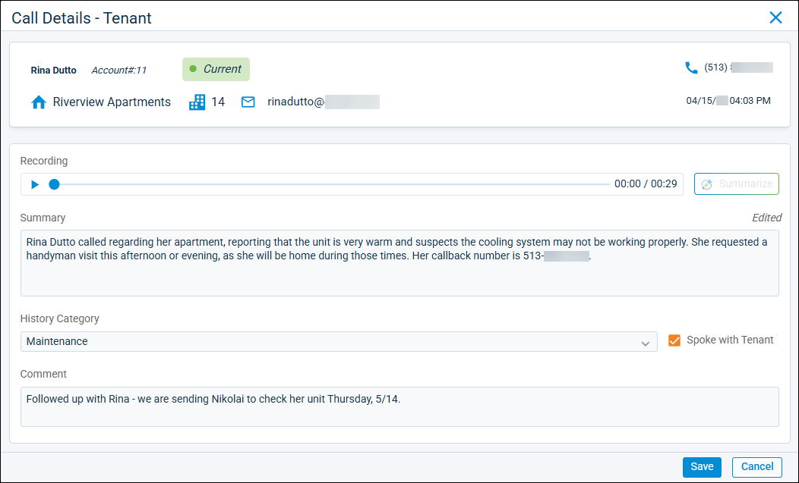
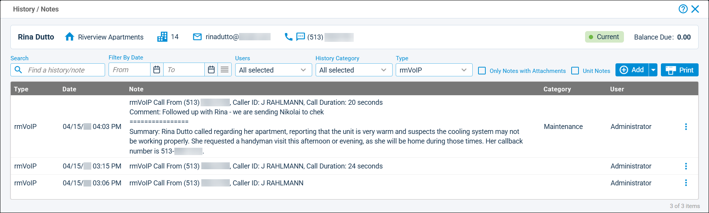

Source: https://rmxhelp.rentmanager.com/Topics/Express/KB/Orion-Call-Summaries.htm
Call Summaries Powered by Orion AI
The Orion Call Summary feature—powered by Orion AI—generates concise summaries of call recordings created using the rmVoIP phone service. You can use this feature to quickly scan call records, review the important points of each conversation, effectively triage issues, and be well-informed in your responses. Whether you receive a high or low call volume, this feature helps improve your team's efficiency in managing each phone call you receive.
More Information
This feature is licensed and must be purchased separately. For more information, contact your sales representative at sales@rentmanager.com.
Generate an Orion Call Summary

You can use the Orion Call Summary feature from any Call Details pop-up in Rent Manager. The Call Details pop-up can be accessed for any call listed in the rmVoIP Unlinked Calls page or the rmVoIP Incoming Call History page, or, for calls linked to a particular entity, from items in that entity's History/Notes pop-up with a rmVoIP-type.
After opening the Call Details pop-up, you can generate a summary of the call by clicking  Summarize. Then, Orion AI begins a brief process of analyzing the call recording and generating a text summary. Once the process is complete, the Summary field displays with information about the call.
Summarize. Then, Orion AI begins a brief process of analyzing the call recording and generating a text summary. Once the process is complete, the Summary field displays with information about the call.
More Information
Once a summary is generated, the  Summarize option becomes unavailable. If you wish to generate a new summary, delete all text from the Summary field. After doing so, the
Summarize option becomes unavailable. If you wish to generate a new summary, delete all text from the Summary field. After doing so, the  Summarize option becomes available to generate a new summary.
Summarize option becomes available to generate a new summary.
Review Call Summaries

You can view the record of Orion Call Summaries linked to particular tenants, prospects, owners, and so on, from their respective History/Notes pop-ups. Once a call recording is summarized, the summary is saved to the corresponding history/notes entry on the linked entity. The summary displays in the Note column for the entry. You can also view the summary by selecting  arrow_forward Details on the relevant entry.
arrow_forward Details on the relevant entry.